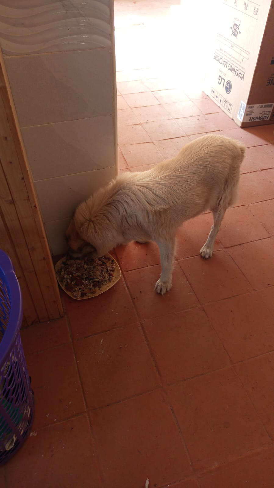

Mucheru World of Golf
Significant engineering progress was achieved at Mucheru World of Golf on Thursday, 15th October 2026, under the on-site leadership of Mr. Gichuhi and Ken, highlighted by dual-canal drainage excavation, full course-wide sprinkler trenching, teebox leveling, and hydraulic reservoir pumping:
Golf Course Operational Highlights
The primary greens drainage outlet trench reached the perimeter fence near Green 1 all the way from Dam 1, while excavation began on the second main drainage trench near Gate A. Pop-up sprinkler trench digging reached 100% completion across all 18 greens. Teeboxes 2, 3, and 4 were fully graded and refined, with initial grading underway on Teebox 9. Dewatering of Dam 2 commenced using water pumps, and Dam 3 water inlet progressed.
- First Main Drainage Trench Reaches Perimeter Fence: Excavation of the primary greens drainage outlet canal reached a major milestone, extending all the way from Dam 1 to the perimeter fence line near Green 1. This deep channel will receive and evacuate excess sub-surface water from multiple green outlets.
- Second Main Drainage Trench Initiated Near Gate A: Peter Githinji's Backhoe Loader commenced excavation on the second main drainage collector canal, starting along the chalk-marked alignment near the perimeter fence by Chaka Farms Gate A.
- 100% Pop-Up Sprinkler Trench Digging Completed: Ground crews successfully finished digging perimeter trenches for the automated pop-up sprinklers across all 18 putting greens, establishing the complete circular trench network ready for PVC pipe placement and sprinkler head installation.
- Drainage Trench Leveling & PVC Pipe Laying: Labor teams manually graded and leveled the beds of lateral drainage trenches connecting Greens 7 and 9, jointing orange PVC drainage pipes and seating them directly into the graded ditches to ensure unimpeded gravitational fall.
- Teeboxes 2, 3, 4 Refined; Teebox 9 Initiated: Ground crews completed precision leveling, topsoil dressing, and boundary contouring across Teeboxes 2, 3, and 4. Initial platform shaping and earthwork grading commenced on Teebox 9, with works carrying over into tomorrow.
- Dam 2 Dewatering Commenced via Water Pump: Portable petrol water pumps were deployed inside Dam 2, pumping water out of the reservoir basin through discharge hoses to clear accumulated water and permit geomembrane liner inspection, repairs, and inlet adjustments.
- Dam 3 Water Inlet Works Progressing: Earthwork excavation and channel shaping for the incoming water feeder canal into Dam 3 continued steadily under machine and manual supervision.
18-hole putting green status audit showing the latest work completed and current condition for each green as of October 15, 2026:
| Green | Current Technical & Agronomic State | Milestone Status |
|---|---|---|
| Green 1 | Pop-up sprinkler and irrigation perimeter trenches dug along marked chalk line (Oct 14). | Sprinkler Trenches Complete |
| Green 2 | Pop-up sprinkler and irrigation perimeter trenches dug along marked chalk line (Oct 14). | Sprinkler Trenches Complete |
| Green 3 | Pop-up sprinkler and irrigation perimeter trenches dug along marked chalk line (Oct 14). | Sprinkler Trenches Complete |
| Green 4 | Pop-up sprinkler and irrigation perimeter trenches dug along marked chalk line (Oct 14). | Sprinkler Trenches Complete |
| Green 5 | Ready. Fully established mature championship putting green turfgrass under active pop-up sprinkler irrigation conditioning. | Ready • Established Turf |
| Green 6 Today | Pop-up sprinkler trenches digging completed around green perimeter collar (Oct 15). | Sprinkler Trenches Complete |
| Green 7 Today | Drainage outlet trench connecting green 7 to main canal dug and leveled by manual crew (Oct 15). | Outlet Trench Dug • Leveled |
| Green 8 Today | Pop-up sprinkler trenches digging completed around green perimeter (Oct 15). | Sprinkler Trenches Complete |
| Green 9 Today | Orange drainage PVC pipe connected and outlet trench leveled leading to main canal (Oct 15). | PVC Connected • Trench Done |
| Green 10 Today | Pop-up sprinkler trenches digging completed around collar and surrounds (Oct 15). | Sprinkler Trenches Complete |
| Green 11 Today | Pop-up sprinkler trenches digging completed around green perimeter (Oct 15). | Sprinkler Trenches Complete |
| Green 12 Today | Pop-up sprinkler trenches digging completed around perimeter collar (Oct 15). | Sprinkler Trenches Complete |
| Green 13 Today | Pop-up sprinkler trenches digging completed along marked green perimeter (Oct 15). | Sprinkler Trenches Complete |
| Green 14 Today | Pop-up sprinkler trenches digging completed around green collar (Oct 15). | Sprinkler Trenches Complete |
| Green 15 Today | Pop-up sprinkler trenches digging completed around outer collar surrounds (Oct 15). | Sprinkler Trenches Complete |
| Green 16 Today | Pop-up sprinkler trenches digging completed around green perimeter collar (Oct 15). | Sprinkler Trenches Complete |
| Green 17 Today | Pop-up sprinkler trenches digging completed around green perimeter (Oct 15). | Sprinkler Trenches Complete |
| Green 18 | Pop-up sprinkler trenches dug; riversand applied and leveled across green surface (Oct 14). | Riversand • Sprinkler Trench |
Comprehensive 18-hole championship teebox platform audit tracking earthwork leveling, structural embankments, and playing corridor alignments as of October 15, 2026:
| Teebox | Current Technical & Earthwork State | Platform Status |
|---|---|---|
| Tee 1 | Playing launch platform fully refined, contoured, and graded to final design elevation (Oct 14). | Refined & Graded |
| Tee 2 Today | Platform earthwork grading and surface refinement completely finished (Oct 15). | Refined & Graded |
| Tee 3 Today | Playing launch platform completely graded, leveled, and refined to final elevation (Oct 15). | Refined & Graded |
| Tee 4 Today | Championship launch platform completely graded, leveled, and refined to final elevation (Oct 15). | Refined & Graded |
| Tee 5 | Main perimeter drainage pipeline backfilled all the way past Maina's place (Oct 2). | Drainage Backfilled |
| Tee 6 | Precision leveling and compaction completed; fresh delivery of 1 lorry red loam topsoil unloaded at platform surrounds (Sep 26). | Red Soil In • Leveled |
| Tee 7 | Both number 7 teebox platforms actively reshaped, cut, and leveled by crew under Joe Kamau and supervisors (Oct 4). | Both Platforms Reshaped |
| Tee 8 | Graded, leveled, and contour-adjusted; fresh delivery of 1 lorry red loam topsoil unloaded directly on platform (Sep 26). | Red Soil In • Graded |
| Tee 9 Today | Initial platform grading and earthwork refinement started, carrying on tomorrow (Oct 15). | Refinement in Progress |
| Tee 10 | Playing launch platform shaping and surface refinement completely finished (Oct 13). | Platform Refined |
| Tee 11 | Playing launch platform grading and contour refinement completely finished (Oct 13). | Refinement Complete |
| Tee 12 | Both championship and forward platforms actively shaped, leveled, and refined to finished design elevation (Oct 8). | Shaped & Refined |
| Tee 13 | Playing platform earthworks completely finished, shaped, and refined to final design elevation and contours (Oct 7). | Finished & Refined |
| Tee 14 | Launch platform earthworks completely finished, shaped, and refined to final playing contour (Oct 7). | Finished & Refined |
| Tee 15 | Launch platform shaping completely finished; terrace cut to design elevation and precision leveled (Oct 6). | Platform Reshaped |
| Tee 16 | Surplus red soil moved onto platform; launch terrace completely reshaped and leveled (Oct 5). | Platform Reshaped |
| Tee 17 | Launch platform reshaped, cleared of brush, and graded to playing corridor alignment (Oct 6). | Platform Reshaped |
| Tee 18 | Championship tee platform leveled; perimeter approach cleared and graded (Sep 1); received 1 lorry red soil delivery (Sep 26). | Platform Leveled |
Operations Agronomy & Engineering Synthesis
Putting Greens & Hydraulic Milestones: 100% of all 18 greens have completed pop-up sprinkler trench digging; the first main drainage outlet trench reached the perimeter fence near Green 1 all the way from Dam 1; excavation commenced on the second main drainage trench near Gate A; labor teams leveled lateral trenches and laid connected orange PVC pipes at Greens 7 and 9; Dam 2 dewatering commenced with water pumps; Dam 3 inlet progressing.
Championship Teebox Platforms: Teeboxes 1, 2, 3, and 4 are now fully graded and refined to final elevation; Teebox 9 platform grading actively underway and continuing tomorrow; remaining teeboxes maintain established design levels.
Comprehensive video field documentation capturing heavy machinery drainage excavation by the Backhoe Loader reaching the perimeter fence, second canal initiation near Gate A, manual trench leveling and PVC pipe laying, teebox grading on platforms 2, 3, 4, and 9, complete pop-up sprinkler trenching, and Dam 2 dewatering via portable water pumps on Thursday, 15th October 2026.
Photographic field documentation capturing main drainage excavation, PVC pipeline placement, pop-up sprinkler trench completion, teebox platform refinement, and Dam 2 dewatering across Mucheru World of Golf:

First Main Drainage Trench Reaching Perimeter Fence
Aerial perspective showing the deep collector drainage canal excavated all the way from Dam 1 to the perimeter fence line near Green 1.

Second Main Drainage Trench Excavation Near Gate A
Aerial capture of the yellow JCB Backhoe Loader cutting the new main drainage canal along the chalk line near Chaka Farms Gate A.

Backhoe Loader Excavating Deep Collector Trench
Ground-level view of heavy machinery excavation along the main drainage alignment with site supervisors guiding the trench grade.

Profile of Continuous Main Drainage Canal
Perspective view showing the excavated depth, straight trajectory, and volume of soil removed along the greens drainage canal.

Close-Up: Backhoe Loader Excavation Operation
Frontal perspective of the Backhoe Loader excavator boom digging deep into the soil profile to maintain drainage fall.

Digging Drainage Outlet Trench at Green 7
Laborer excavating the green outlet ditch through the red soil surround at Green 7 to link into the collector drainage network.

Aerial View: Drainage Trench Connecting Green 7
Overhead view of Green 7 displaying the leveled river sand bed, circular collar, and the manual crew excavating the connecting trench line.

Aerial View: Drainage Corridor Run from Green 7
Drone photograph showing the continuous straight drainage ditch excavated across the rough by the manual workforce.

Aerial View: Green 9 Drainage & Dam 3 Basin
Aerial perspective of Green 9 with the orange PVC drainage pipe exiting the green into the outlet ditch running alongside Dam 3.

Manual Trench Leveling & PVC Pipe Laying
Ground crew utilizing shovels to grade the trench bed while connected long sections of orange PVC pipes lie ready for placement.

Finishing Pop-Up Sprinkler Perimeter Trench
Worker shaping and grading the perimeter irrigation trench in the red soil collar bordering the pumice stone drainage bed.

100% Sprinkler Trench Digging Completed
Laborer digging the outer irrigation ditch around a putting green collar, completing the sprinkler trenching across all 18 greens.

Portable Water Pump Stationed Inside Dam 2
Ground view of the petrol engine water pump resting on the black geomembrane liner, evacuating water through a delivery pipe.

Aerial View: Dewatering Dam 2 Basin
Drone capture of Dam 2 showing water pumped out of the geomembrane lined reservoir to permit maintenance and liner repairs.

Ground Crew Grading Teebox 2 Platform
Field workers using wheelbarrows and rakes to distribute topsoil and refine the finished grade of Teebox 2 platform.

Aerial View: Manual Teebox Platform Grading
High-angle drone photograph showing the manual workforce systematically leveling the playing launch surface to design elevation.

Completed Graded Teebox Launch Surface
Level, refined rectangular teebox platform shaped with fertile red loam topsoil and clean perimeter embankment batters.

Shaping Teebox Playing Corridor Platform
Labor team grading the playing terrace surface and aligning platform orientation toward fairway landing zones.

Spreading Topsoil on Teebox Platform
Ground crew spreading rich red loam across the teebox playing surface with Dam 3 water body visible in the background.

Finished Surface Profile of Graded Teebox
Uniform, smooth earthwork terrace prepared for upcoming grass turf establishment and playing launch compaction.

Aerial View: Initial Grading on Teebox 9
Drone capture of initial platform earthwork grading and topsoil distribution on Teebox 9, scheduled to continue tomorrow.
Chaka Farms
Operations at Chaka Farms on Thursday, 15th October 2026 maintained balanced productivity across dairy production, decorative landscape gardening, disciplined canine training, and estate cleanliness:
Farm Operational Highlights
Dairy production achieved 7.0 Litres gross harvest with 6.0 Litres commercial sales and 1.0 Litre in routine farm allocations, fully reconciled in Litres. Rock garden construction advanced with rockery borders and rich red topsoil bedding. Willy conducted kennel sanitation, paw command practice, walking and exercise, morning socialization for Mali and Zara, and initiated ectoparasite tick management for Coby and Mali. Margaret and Monica maintained estate cleanliness.
- Reconciled Dairy Production (7.0 Litres): Kamandau recorded 7.0 Litres gross milk yield (4.5L morning session + 2.5L evening session). Commercial sales totaled 6.0 Litres (3.5L morning + 2.5L evening). Routine internal farm disbursements accounted for 1.0 Litre (0.5L Gladys staff ration + 0.5L Maasai), ensuring 100% accounting reconciliation strictly in Litres with zero discrepancy.
- Rock Garden Landscaping & Red Soil Placement: Willy advanced construction of the estate rock garden, aligning decorative border stones along taut builder's string lines and backfilling raised terraces with fertile red loam soil transported by wheelbarrow.
- Disciplined Canine Unit Training & Manners: Willy conducted thorough morning kennel washing and disinfection, followed by structured obedience sessions practicing the "paw" command, walking, and exercising. Morning socialization was conducted successfully for Mali and Zara.
- Canine Health & Ectoparasite Management Note: Routine daily health inspections identified tick presence on Coby and Mali. Immediate manual deticking was carried out, and topical acaricide tick treatment was initiated to protect canine skin health and prevent tick-borne diseases.
- General Compound Cleanliness & Maintenance: Margaret and Monica carried out comprehensive estate grounds maintenance, sweeping paved paths, collecting fallen leaves and litter, and maintaining pristine compound aesthetics.
Official quantitative dairy milking harvest and sales ledger for Thursday, 15th October 2026, recording gross yields, commercial dispatches, and internal farm disbursements strictly in Litres:
| Category / Transaction | Morning Session | Evening Session | Daily Total |
|---|---|---|---|
| Gross Milk Harvested | 4.5 Litres | 2.5 Litres | 7.0 Litres |
| Commercial Milk Sales (Dispatched) | 3.5 Litres | 2.5 Litres | 6.0 Litres |
| Internal Farm Allocation — Gladys (Staff) | 0.5 Litres | — | 0.5 Litres |
| Internal Farm Allocation — Maasai | 0.5 Litres | — | 0.5 Litres |
| Internal Farm Allocation — Goat Kids (Weaned) | 0.0 Litres | 0.0 Litres | 0.0 Litres |
| Total Volume Accounted For | 4.5 Litres | 2.5 Litres | 7.0 Litres (100% Reconciled) |
Dairy Accounting & Veterinary Note
Total gross milk harvested of 7.0 Litres is fully accounted for by 6.0 Litres sold commercially and 1.0 Litre in routine farm allocations (0.5L Gladys + 0.5L Maasai). All milk figures are recorded strictly in Litres. In the canine unit, tick presence observed on Coby and Mali was promptly addressed with manual grooming, deticking, and topical acaricide treatment.
Field video recording documenting the Chaka Farms canine unit kennel manners training session overseen by Willy, highlighting obedience commands, structured stall manners, and calm canine behavior.
Photographic field documentation capturing rock garden landscaping, border stone alignment, and red topsoil placement at Chaka Farms:

Rock Garden Border Alignment & Red Soil Bed
Field view of the rockery terrace featuring natural stone borders retaining freshly leveled red topsoil bedding for estate landscaping.

String Line Alignment for Border Stones
Close-up showing guide strings positioned to ensure accurate elevation and curve curvature of the natural rock retaining border.

Transporting Red Soil via Wheelbarrow
Farm worker hauling fertile red loam soil from the bulk stockpile to backfill the raised rock garden planting terraces.
Kabete Residence
Field operations at Kabete Residence were overseen and shared by Njoki on Thursday, 15th October 2026, advancing structural concrete hydration, falsework shuttering, rebar spacer fabrication, and domestic pet welfare:
Structural Engineering Highlights
Continuous water curing was applied to the concrete retaining wall along the river and stone masonry walls at the SQ fireplace. Carpenters erected vertical timber props and formwork boxes for the SQ top slab, fabricated concrete cover spacer blocks, and offloaded a truck delivery of eucalyptus support poles.
- Forest River Retaining Wall Water Curing: Masons conducted thorough water hose curing across the freshly cast concrete columns and horizontal capping beam of the river retaining wall to ensure gradual cement hydration and prevent shrinkage cracking.
- SQ Fireplace Stone Masonry Curing: Workers in protective coveralls performed continuous water spraying along the stone masonry perimeter and partition walls of the Staff Quarters (SQ) building at the fireplace.
- Woodwork & Formwork Shuttering at SQ Structure: Carpenters actively erected vertical eucalyptus prop poles, timber runners, and marine plywood shuttering boxes along the crest of the SQ masonry walls in preparation for the upper lintel and slab cast.
- Fabrication of Concrete Cover Spacer Blocks: Structural crew fabricated cement mortar spacer blocks with embedded tie wires on a flat steel bed, ensuring specified concrete cover will be maintained beneath the top slab reinforcement mesh.
- Offloading Timber Formwork Prop Poles: A pickup truck delivery of eucalyptus timber prop poles and rebar was received and manually offloaded on site, supplying required bracing timber for upcoming overhead formwork.
- Domestic Pet Care & Nutrition: Ajabu the Golden Retriever received hearty meal rations indoors on the tiled floor, while resident cats Reo and Aiko enjoyed dinner side-by-side, with Mocha present at evening meal time.
Photographic field documentation capturing retaining wall water curing, SQ woodwork formwork, concrete spacer fabrication, timber offloading, and domestic pet welfare at Kabete Residence:

Water Curing Concrete Retaining Wall
Workers in safety gear hosing down freshly poured concrete along the horizontal capping beam of the forest river retaining wall.

Hydration Curing on Retaining Wall Beam
Continuous water saturation of the retaining wall beam steel and concrete inside wooden shuttering to maximize structural strength.

Water Curing Masonry Walls at SQ Fireplace
Worker in orange coveralls spraying water onto the stone masonry walls of the SQ building at the fireplace for optimal mortar bonding.

Full Height Stone Wall Water Curing
Elevated perspective showing thorough water hydration applied to the perimeter and partition stone masonry courses of the SQ structure.
%20on%20progress%20at%20the%20SQ%20at%20the%20fireplace.jpeg)
Carpentry Formwork on SQ Walls
High-angle view of carpenters and masons in safety vests securing timber formwork and shuttering boards on top of the masonry walls.

Timber Props Supporting Upper Beam Formwork
Vertical wooden support poles positioned to carry the load of horizontal beam boxes and marine plywood shuttering for the SQ structure.

Structural Timber Falsework at SQ Structure
Ground view of timber scaffolding and vertical props erected beneath the lintel and slab formwork inside the SQ fireplace build.

Falsework & Shuttering Setup at SQ Building
Additional perspective of vertical prop poles and shuttering panels aligned along the stone masonry wall corners.

Fabricating Concrete Cover Spacers for Top Slab
Workers preparing a mortar bed with embedded binding wires to cast concrete cover spacers for proper rebar elevation on the upcoming top slab pour.

Pickup Truck Delivering Timber Formwork Poles
Black pickup truck carrying a heavy cargo of eucalyptus prop poles and steel reinforcement bars on its overhead rack arriving at Kabete Residence.

Eucalyptus Timber Prop Poles Offloaded on Site
Neatly stacked timber poles offloaded near the work area, ready for carpenters to cut and brace as falsework props for the SQ top slab.

Ajabu Dining Indoors at Kabete Residence
Kabete Residence resident pet Ajabu enjoying fresh meal rations indoors on the tiled floor in great health and high spirits.

Reo & Aiko Feeding Side-by-Side (Mocha at Dinner)
Resident cats Reo and Aiko dining peacefully side-by-side from stainless steel bowls, with Mocha joining companionship at dinner time.